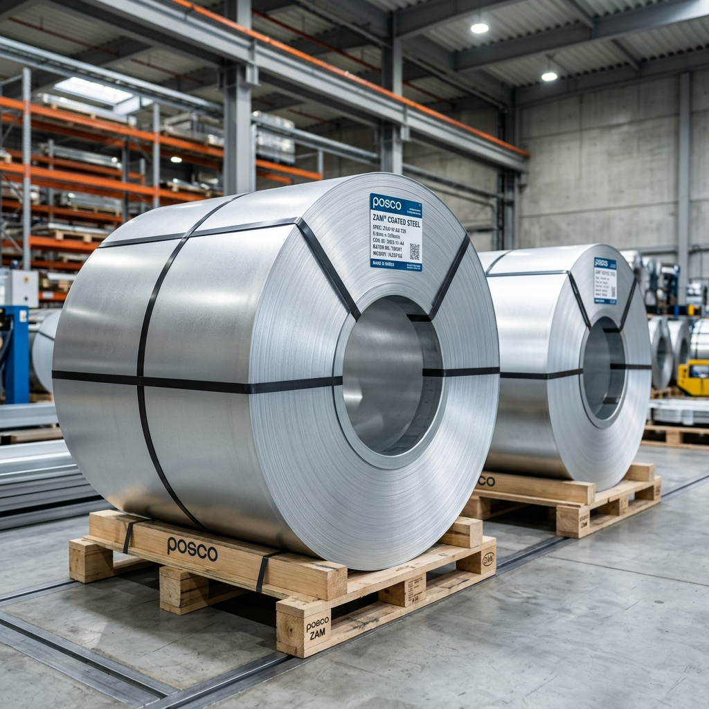

Understanding ZAM Coated Steel: Properties & Applications

In industries where materials are subjected to harsh, highly corrosive environments, traditional galvanized steel often falls short over long periods. Enter ZAM (Zinc-Aluminium-Magnesium) coated steel, an advanced material designed for extreme longevity.
What is ZAM?
ZAM is an innovative coating alloy applied to steel, predominantly consisting of zinc, with added aluminium (typically around 6-11%) and magnesium (around 3%). This unique chemical composition provides unparalleled protection against red rust.
Brands like Magnelis by ArcelorMittal and Magsure by Tata Steel are leading examples of ZAM technology in the market.
The Self-Healing Miracle
One of the most remarkable properties of ZAM is its cut-edge self-healing capability. When the steel is sheared or scratched, exposing the bare base metal, the magnesium within the coating reacts with the surrounding moisture to form a dense, protective zinc-based film that spreads over the exposed edge, preventing rust from taking hold.
Key Benefits of ZAM Steel
- Superior Corrosion Resistance: Lasts up to 3 times longer than standard Galvanized (GP) or Galvalume sheets in high-chloride marine environments.
- Lower Maintenance Costs: The extended lifespan drastically reduces replacement and maintenance overheads.
- Lightweight Potential: Thinner coatings can be used to achieve the same level of protection as thicker, heavier zinc coatings.
Ideal Applications
Given its exceptional durability, ZAM steel is the preferred choice for:
- Solar Mounting Structures: Providing decades of support without rusting in open fields.
- Agricultural Facilities: Resisting the highly corrosive ammonia present in livestock sheds and greenhouses.
- Coastal Construction: Withstanding the relentless salt spray near the ocean.